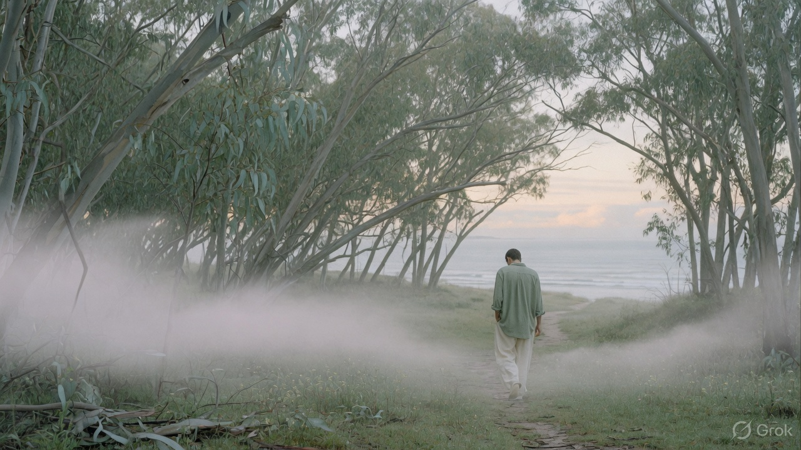
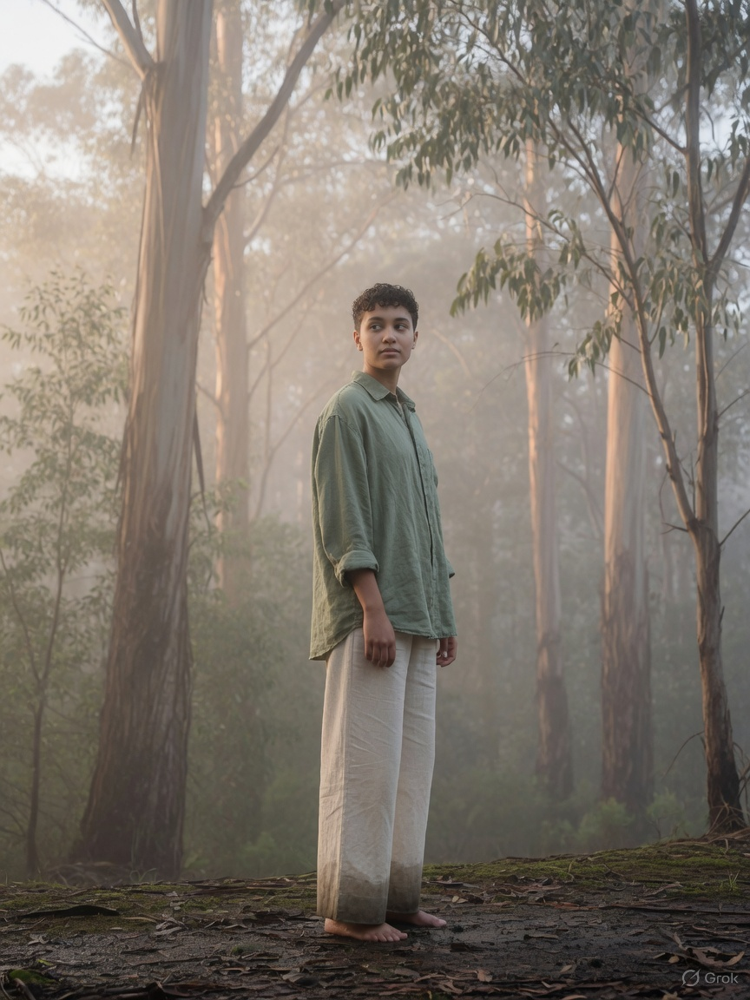
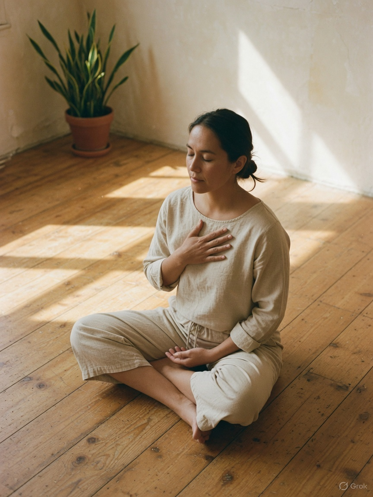
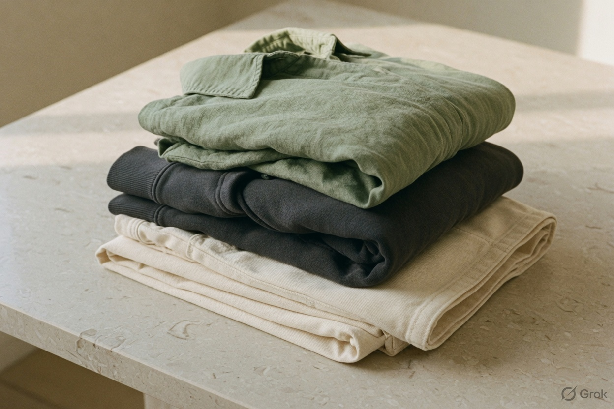

Planet
Fibres with a future.
European flax linen, regenerative cotton, hemp. Plant and mineral colour. Recycled paper packaging. We mend what we make, and 5% of every order goes to community mental health.
Read the story
Silent Actions is clothing grown, dyed, and cut for the planet you share and the nervous system you live in. Small batches. Honest fibres. One quiet choice at a time.

A better garment is a better day. We make clothes that sit softly on the body, from fibres that sit softly on the earth. Then we ask one thing of you: keep a Quiet Hour. Ten minutes. No phone. Breath, journal, or a walk.
Choose cloth that can return to soil.
Wear it until it knows you.
Sit with four breaths before you speak.
Itch-free seams. No scratch labels. Breathable cloth. Weight that holds without gripping. Silent Actions is cut for people who feel the world at full volume. The site holds a four-breath practice; every first order arrives with the Quiet Hour journal.

European flax linen, regenerative cotton, hemp. Plant and mineral colour. Recycled paper packaging. We mend what we make, and 5% of every order goes to community mental health.
Read the storyAfterpay and Zip Pay are at checkout so ecological clothing does not have to arrive all at once on the card. Four instalments, no interest, subject to their approval. Pay the planet forward at a pace that fits.


Available on the bag. You will choose Afterpay, Zip Pay, or card before you place the order.
